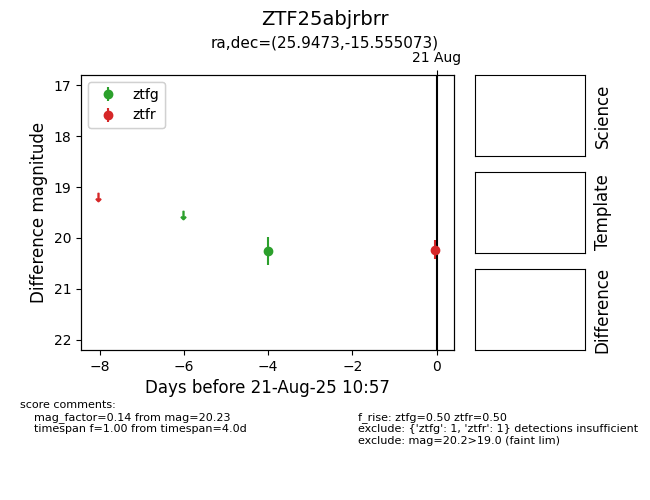

Target ZTF25abjrbrr at 2025-08-21 10:57, see:
FINK: fink-portal.org/ZTF25abjrbrr
Lasair: lasair-ztf.lsst.ac.uk/objects/ZTF25abjrbrr
ALeRCE: alerce.online/object/ZTF25abjrbrr
alt names
ZTF25abjrbrr (ztf,alerce)
coordinates:
equatorial (ra, dec) = (25.9473,-15.55507)
galactic (l, b) = (171.9958,-73.21552)
photometry
last ztfg=20.26, ztfr=20.23
1 ztfg, 1 ztfr detections
